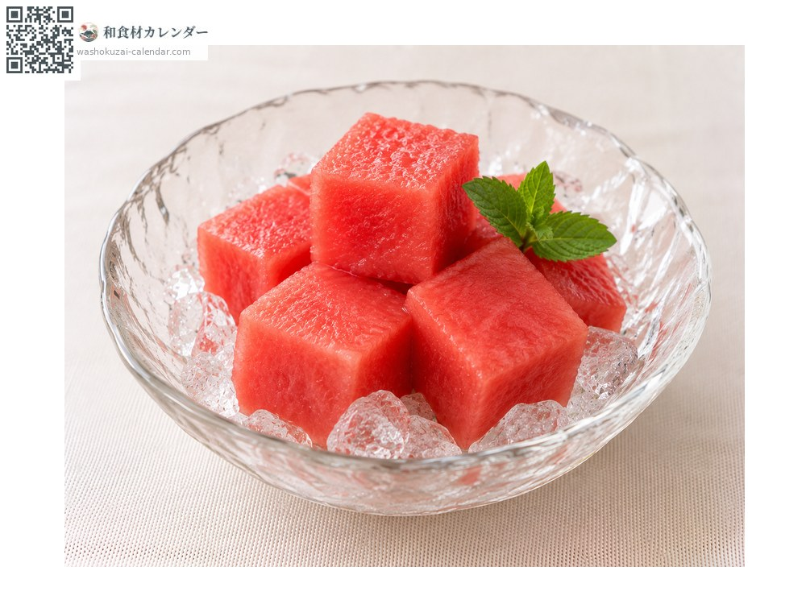
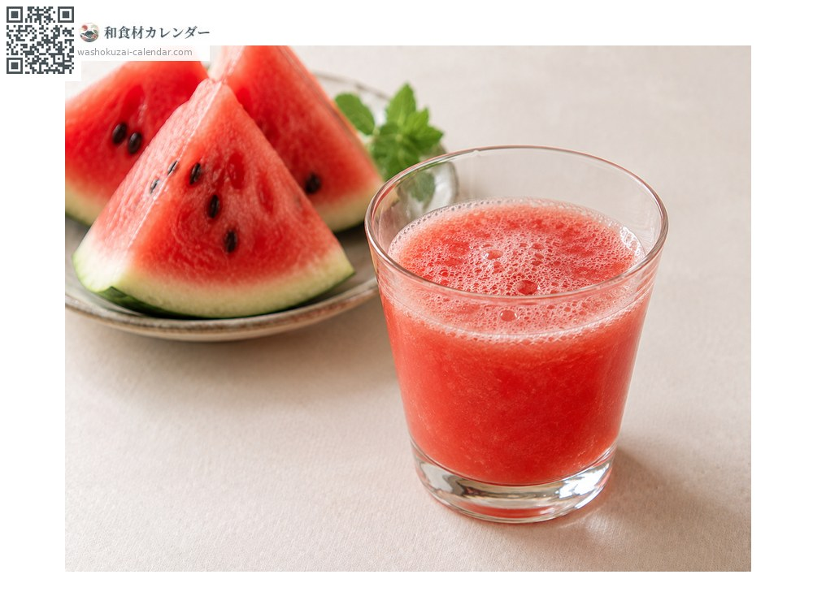
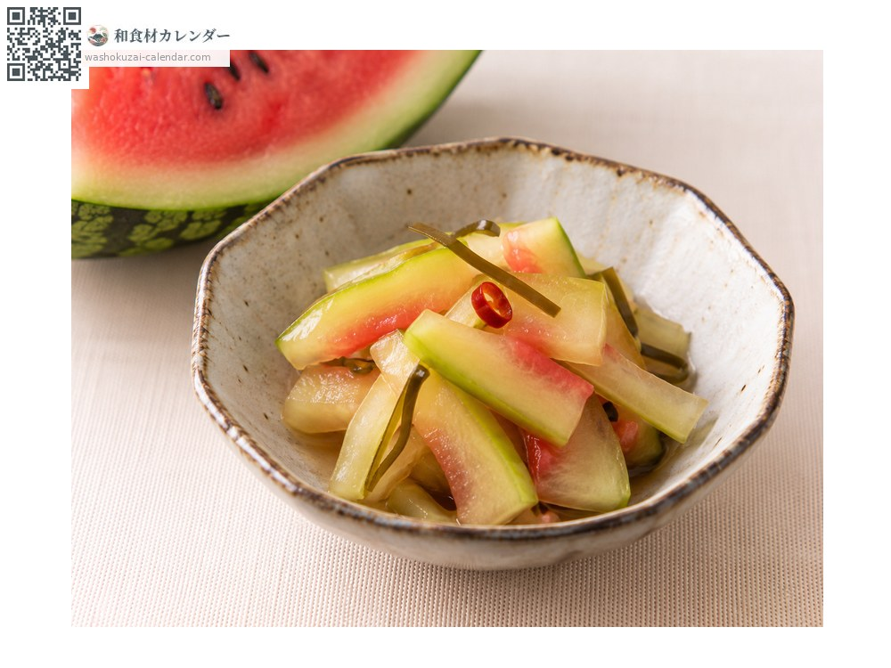
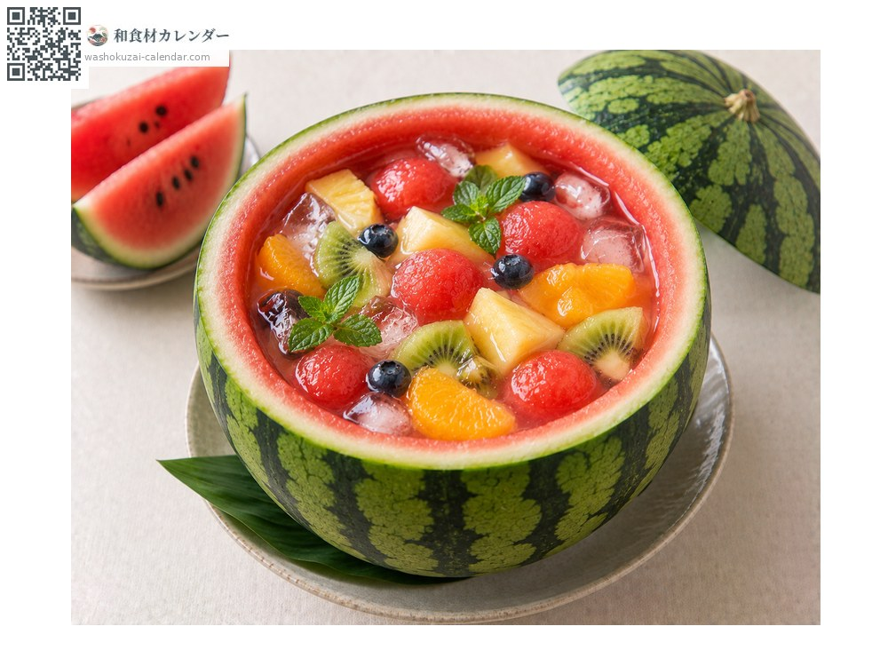

果物
スイカ
すいか
別名・別表記西瓜、suika
旬は6月・7月・8月

旬の時期
1月
2月
3月
4月
5月
6月
7月
8月
9月
10月
11月
12月
旬出回り
調理法

そのまま
塩を少し振ると甘みが引き立つ。

ジュース
ミキサーにかけて。

皮の漬物
白い部分を浅漬けに。

フルーツポンチ
くり抜いて。
選び方
縞模様がはっきりし、叩くと澄んだ音がするもの。つるの付け根が少しくぼんでいるもの。
保存方法
丸ごとは常温。カットしたらラップで包んで冷蔵し、早めに食べる。
主な産地
豆知識
中心部が最も甘い。切り分けるときは中心が均等に行き渡るよう放射状に切ると良い。